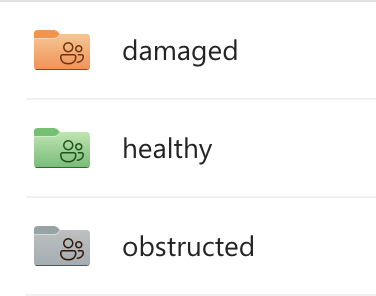
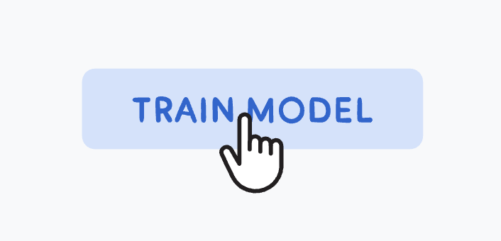

Project Objectives
- Core Goal: Develop an image classification model using Google’s Teachable Machine that accurately categorizes leaves by their physical appearance/condition.
- 3 Target Classes: We trained the model to distinguish between Healthy (intact, green leaves), Damaged (minor tears, holes, or discoloration), and Obstructed (fully crushed, blackened, or decayed).
- Real-World Relevance: We wanted to demonstrate how accessible machine learning tools can automate plant health monitoring, early disease detection, or agricultural sorting.
Project Scope
- Dataset: A collection of 300 total images, balanced evenly with 100 images per class.
- Team Collaboration:The 3 of us captured 100 photos dedicated to a leaf category.
- Model Boundaries: We focused on visual surface-level conditions (structural integrity and color) across common local leaves under varied lighting and backgrounds, rather than identifying specific botanical species or internal plant diseases. In Unmasking AI, Buolamwini explains how AI systems reflect the priorities, blind spots, and environments of the people who build them. In an effort to avoid these blind spots and ensure diversity within the dataset, each team member was responsible for 2 of the categories (evenly split, 50-50). This prevented our own individual environments (like one person’s specific carpet or lighting) from becoming an unintended shortcut for the algorithm.
Process
- Planning & Task Division: We defined clear visual criteria for each of the 3 classes and assigned 2 categories per team member to streamline data collection.
- Data Collection: In the readings, Buolamwini also mentions that AI models fail when trained on narrow or imbalanced datasets. So, capturing 100 photos per category using different leaf species, angles, lighting conditions, and backgrounds prevents the model from memorizing a single surface.
- Model Training: We uploaded the organized image folders into Teachable Machine’s Standard Image Model and trained the classifier.
- Testing & Validation: We evaluated the trained model using both live webcam input and file upload. We used brand-new test images unseen during training to check accuracy and catch misclassifications.


Lessons Learned
Throughout this project, we learned how data diversity is more important than quantity. Having varied backgrounds, angles, and lighting is just as important as the number of photos. Otherwise, the AI learns to recognize the table or background instead of the leaf itself. We also learned the importance of class balance. Keeping an equal 100-100-100 split prevented the model from becoming biased toward guessing 1 dominant category. Lastly, we also learned how visually overlapping cases (like a leaf with heavy brown spots vs. a completely obstructed/decayed leaf) showed how important strict, consistent labeling criteria are during data collection. Buolamwini challenges the idea that AI is an objective, all-knowing “black box” and emphasizes that every algorithm reflects human choices (what gets labeled, what gets left out, etc.). We acknowledge that our model does not act independently in making decisions and any confusion the model has on borderline leaves/edge cases directly reflects our group’s definitions (what is considered Damaged vs. Obstructed) and sample choices that we agreed upon during data collection. Our biggest takeaway as a group aligns with a central theme of Unmasking AI: machine learning models are not neutral or foolproof. Their accuracy and fairness depend entirely on the intentionality and care humans put into creating the training data.